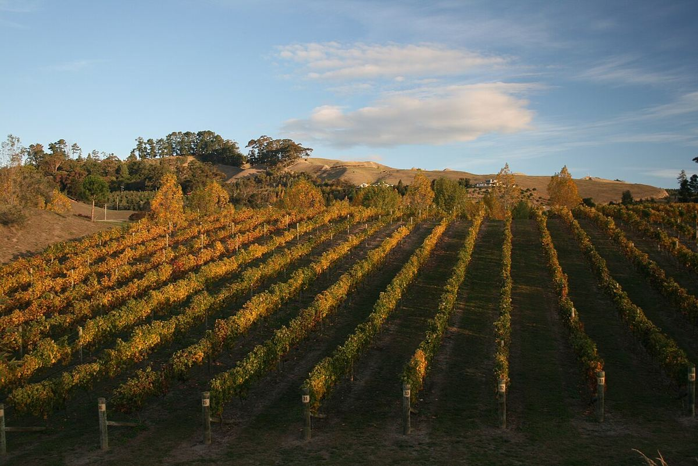

TINTO
Hawke's Bay, en la costa este de la Isla Norte, es una de las regiones vitícolas más antiguas de Nueva Zelanda y la principal para los tintos de tipo bordelés y la Syrah.

La viticultura en Hawke's Bay se remonta a mediados del siglo XIX. En 1851 misioneros maristas plantaron viñas en la región y fundaron la bodega que hoy se conoce como Mission Estate, considerada la más antigua de Nueva Zelanda en funcionamiento. A finales del siglo XIX varios terratenientes crearon otras fincas, entre ellas Te Mata, cuya bodega se cuenta entre las más antiguas del país. Durante buena parte del siglo XX la región produjo sobre todo vinos sencillos, pero a partir de los años ochenta y noventa una nueva generación de productores apostó por los tintos de calidad.
Un hito fue el descubrimiento del potencial de los Gimblett Gravels, un antiguo lecho del río Ngaruroro que quedó al descubierto tras una gran crecida en la década de 1860. Estas tierras pedregosas, consideradas durante mucho tiempo casi inútiles para la agricultura, se plantaron de viñas desde finales de los años ochenta y hoy dan algunos de los tintos más apreciados del país. Los productores de la zona han creado una marca colectiva para identificar los vinos procedentes de este suelo.
Hawke's Bay es una de las regiones más cálidas y soleadas de Nueva Zelanda, protegida de los vientos del oeste por las cordilleras del interior. El clima es marítimo y templado, aunque las lluvias de otoño y los ciclones ocasionales pueden complicar la vendimia. Los suelos son muy variados: además de las gravas de Gimblett Gravels, que acumulan calor y drenan muy bien, destaca el Bridge Pa Triangle, con suelos aluviales de gravas y limos rojizos, y hay terrazas de arcillas y calizas en las colinas y suelos más fértiles en las llanuras costeras. Napier y Hastings son las principales ciudades.
Los tintos de tipo bordelés, a base de Merlot y Cabernet Sauvignon, con Cabernet Franc y Malbec, son la especialidad histórica: vinos de fruta negra y roja, notas de hierbas y cedro y taninos finos, de estilo más fresco que muchos tintos de climas cálidos. La Syrah, que aquí suele etiquetarse con ese nombre y no como Shiraz, ha ganado gran prestigio con vinos especiados, de pimienta negra y violeta. Entre las blancas destaca el Chardonnay, rico y equilibrado, y también se cultivan Sauvignon Blanc, Pinot Gris y Viognier. La región es además uno de los centros de la producción de fruta del país.